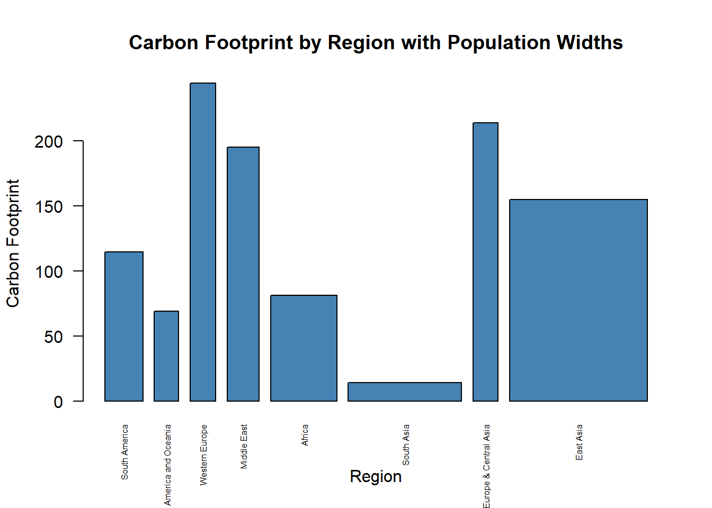
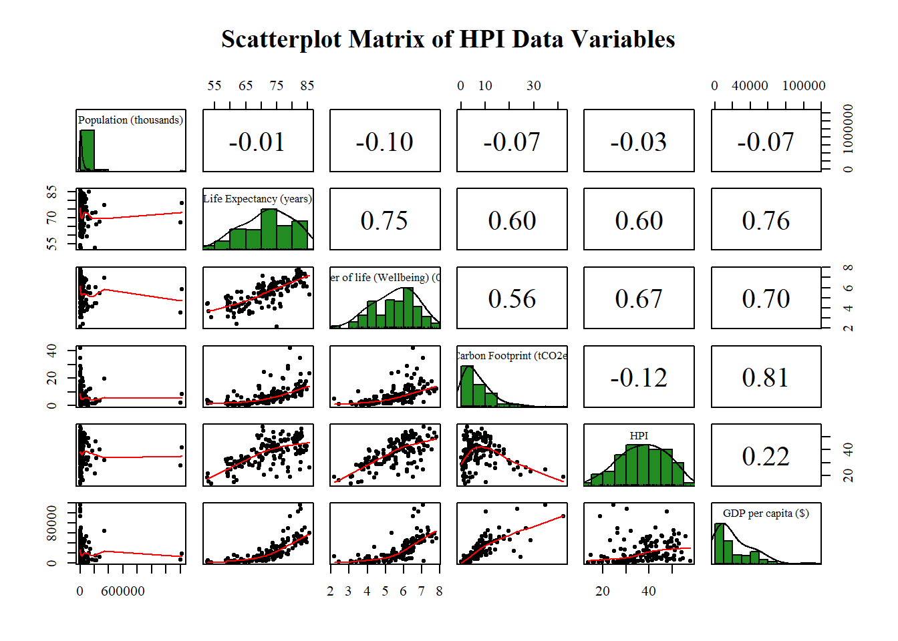
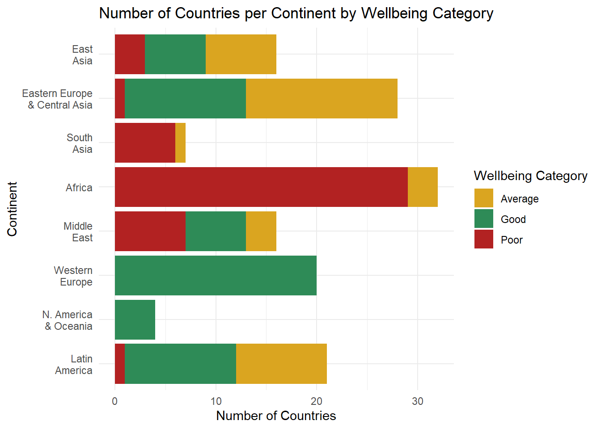
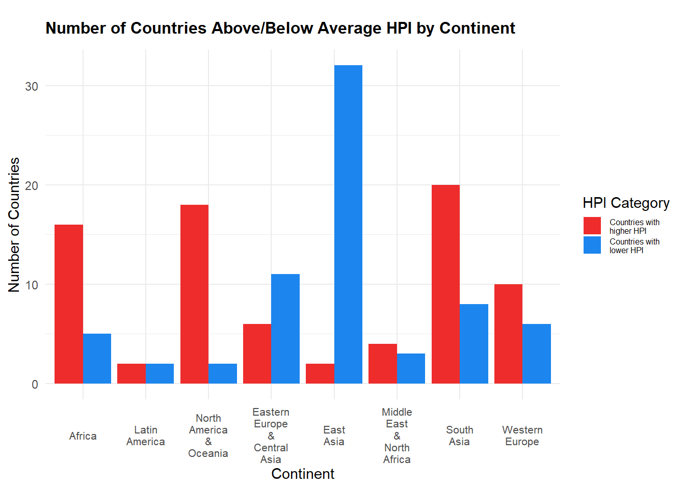

knitr::opts_chunk$set(warning = FALSE)Assignment 4
Group Effort: Graphics using Happy Planet data
library(readxl)
library(dplyr)
Attaching package: 'dplyr'The following objects are masked from 'package:stats':
filter, lagThe following objects are masked from 'package:base':
intersect, setdiff, setequal, unionhappyplanetdf <- read_excel("C:/Users/USER/Desktop/quarto/quarto_website/UTD_SDAR/HPI_2024_public_dataset.xlsx",
sheet = "1. All countries")New names:
• `` -> `...1`
• `` -> `...3`
• `` -> `...4`
• `` -> `...5`
• `` -> `...6`
• `` -> `...7`
• `` -> `...8`
• `` -> `...9`
• `` -> `...10`
• `` -> `...11`
• `` -> `...12`happyplanetdf <- happyplanetdf[-c(1:7), ] # Redundant rows
happyplanetdf <- happyplanetdf[ , -4] # Redundant Column
colnames(happyplanetdf) <- as.character(unlist(happyplanetdf[1,]))
happyplanetdf <- happyplanetdf[-1, ]
colnames(happyplanetdf) [1] "HPI rank" "Country"
[3] "ISO" "Continent"
[5] "Population (thousands)" "Life Expectancy (years)"
[7] "Ladder of life (Wellbeing) (0-10)" "Carbon Footprint (tCO2e)"
[9] "HPI" "CO2 threshold for year (tCO2e)"
[11] "GDP per capita ($)" # Convert columns in happyplanetdf
happyplanetdf <- happyplanetdf %>%
mutate(
Country = as.factor(Country), # Nominal categorical
ISO = as.factor(ISO), # Nominal categorical
`HPI rank` = factor(`HPI rank`, ordered = TRUE), # Ordinal categorical
Continent = as.factor(Continent), # Nominal categorical
`Population (thousands)` = as.numeric(`Population (thousands)`), # Continuous numerical
`Life Expectancy (years)` = as.numeric(`Life Expectancy (years)`), # Continuous numerical
`Ladder of life (Wellbeing) (0-10)` = as.numeric(`Ladder of life (Wellbeing) (0-10)`), # Continuous numerical
HPI = as.numeric(HPI), # Continuous numerical
`CO2 threshold for year (tCO2e)` = as.numeric(`CO2 threshold for year (tCO2e)`), # Continuous numerical
`Carbon Footprint (tCO2e)` = as.numeric(`Carbon Footprint (tCO2e)`), # Continuous numerical
`GDP per capita ($)` = as.numeric(`GDP per capita ($)`) # Continuous numerical
)Chart 1 by Mamie Cincotta
This graphic is a bar plot depicting the carbon footprint of different regions around the world, with each bar’s width proportional to the population size of the corresponding region. The y-axis represents the total carbon footprint in metric tons of CO₂ equivalent (tCO₂e) for each region, while the x-axis lists the regions, including South America, North America & Oceania, Western Europe, and others. The names of the regions are displayed at an angle for readability (due to las = 2), and the bar widths are scaled based on the population size for each region, emphasizing the relative population contribution to the region’s carbon footprint. The color of the bars is set to “steelblue,” and the overall title of the plot is “Carbon Footprint by Region with Population Widths,” illustrating the relationship between population and carbon emissions across different global regions.
# Aggregate data
contems <- aggregate(happyplanetdf$"Carbon Footprint (tCO2e)", list(happyplanetdf$Continent), FUN = sum)
contpop <- aggregate(happyplanetdf$"Population (thousands)", list(happyplanetdf$Continent), FUN = sum)
# Name the regions
names <- c("South America", "North America and Oceania","Western Europe","Middle East", "Africa", "South Asia", "Eastern Europe & Central Asia", "East Asia")
data <- data.frame(contems, names)
# Make the plot
barplot(width = contpop$x, height = contems$x, names=rep(data$names), las = 2, cex.names=.5, ylab = "Carbon Footprint", xlab = "Region", main = "Carbon Footprint by Region with Population Widths", col = "steelblue")
Chart 2 by Warren Cox
This code generates a scatterplot matrix for key variables in the Happy Planet Index (HPI) dataset, providing a visual representation of the relationships between six different variables: Population, Life Expectancy, Wellbeing (Ladder of Life), Carbon Footprint, HPI, and GDP per capita. The matrix includes pairwise scatterplots that help identify potential correlations between variables.
This matrix helps identify potential trends, correlations, and distributions in the HPI data. It can reveal patterns such as whether regions with higher GDP per capita also have higher well-being or lower carbon footprints, and allows users to explore multivariate relationships between the key HPI indicators.
selected_data <- happyplanetdf[c("Population (thousands)","Life Expectancy (years)","Ladder of life (Wellbeing) (0-10)","Carbon Footprint (tCO2e)","HPI","GDP per capita ($)", "Continent")]
par(family = "serif", cex = 1.5)
library(psych)
pairs.panels(selected_data[1:6],
main = "Scatterplot Matrix of HPI Data Variables",
method = "pearson", # correlation method
hist.col = "forestgreen",
density = TRUE, # show density plots
ellipses = FALSE)
Chart 3 by Liberty Smith
This horizontal stacked bar chart visualizes the distribution of countries by Wellbeing Category across various continents. The x-axis represents the number of countries in each continent, while the y-axis lists the continents, including Latin America, North America & Oceania, Western Europe, and others. Each bar is stacked by Wellbeing Category (Good, Average, Poor), with different colors indicating the categories: seagreen for “Good,” goldenrod for “Average,” and firebrick for “Poor.” The chart allows for easy comparison of how countries within each continent are distributed across these wellbeing categories, with the custom labels improving readability. The use of coord_flip() makes the bars horizontal, providing a clear and concise visual representation of the data.
library(ggplot2)
Attaching package: 'ggplot2'The following objects are masked from 'package:psych':
%+%, alphalibrary(tidyr)
# Categorize Life Expectancy, Wellbeing, and Carbon Footprint
happyplanetdf <- happyplanetdf %>%
# Categorize Wellbeing
mutate(Wellbeing_Category = case_when(
`Ladder of life (Wellbeing) (0-10)` < 5.0 ~ "Poor",
`Ladder of life (Wellbeing) (0-10)` >= 5.1 & `Ladder of life (Wellbeing) (0-10)` < 6.0 ~ "Average",
`Ladder of life (Wellbeing) (0-10)` >= 6.0 ~ "Good",
TRUE ~ NA_character_ # For missing values, set NA
))
# Remove NA values in Wellbeing_Category for this plot
clean_data <- happyplanetdf %>%
filter(!is.na(Wellbeing_Category))
# Count the number of countries per continent and wellbeing category
count_data <- clean_data %>%
group_by(Continent, Wellbeing_Category) %>%
summarise(Count = n()) %>%
ungroup()`summarise()` has grouped output by 'Continent'. You can override using the
`.groups` argument.# Custom continent labels
continent_labels <- c(
"1" = "Latin\nAmerica",
"2" = "N. America\n& Oceania",
"3" = "Western\nEurope",
"4" = "Middle\nEast",
"5" = "Africa",
"6" = "South\nAsia",
"7" = "Eastern Europe\n& Central Asia",
"8" = "East\nAsia"
)
# Create the horizontal stacked bar chart
ggplot(count_data, aes(x = Continent, y = Count, fill = Wellbeing_Category)) +
geom_bar(stat = "identity") +
scale_x_discrete(labels = continent_labels) + # Apply custom labels
labs(title = "Number of Countries per Continent by Wellbeing Category",
x = "Continent", y = "Number of Countries", fill = "Wellbeing Category") +
scale_fill_manual(values = c("Good" = "seagreen", "Average" = "goldenrod", "Poor" = "firebrick")) +
theme_minimal() +
coord_flip() # This flips the chart horizontally
Chart 4 By Shiu-Ting Ling
This bar chart depicts the number of countries in each continent that have an HPI (Happy Planet Index) above or below the global average. The x-axis represents continents, with custom labels such as “Latin America,” “Western Europe,” and “East Asia.” The y-axis represents the number of countries in each continent. The chart differentiates between countries with higher HPI (colored in firebrick2) and those with lower HPI (colored in dodgerblue2), using side-by-side bars for each continent to indicate the count. The custom labels in the legend clarify the categories: “Countries with higher HPI” and “Countries with lower HPI.” The chart’s title, “Number of Countries Above/Below Average HPI by Continent,” succinctly summarizes the data. The labels on the x-axis are kept horizontal for readability, and the minimalist theme ensures the focus remains on the data while small adjustments like legend size and text formatting improve the overall presentation.
# Calculate the average HPI for all countries
average_hpi <- mean(happyplanetdf$HPI, na.rm = TRUE)
# Define custom continent names
continent_names <- c("Africa",
"Latin\nAmerica",
"North\nAmerica\n&\nOceania",
"Eastern\nEurope\n&\nCentral\nAsia",
"East\nAsia",
"Middle\nEast\n&\nNorth\nAfrica",
"South\nAsia",
"Western\nEurope")
# Update the Continent column as a factor and assign custom labels
happyplanetdf$Continent <- factor(happyplanetdf$Continent,
levels = 1:8,
labels = continent_names)
# Calculate the number of countries in each continent above and below the average HPI
continent_hpi_comparison <- happyplanetdf %>%
group_by(Continent) %>%
summarise(
High_HPI_Count = sum(HPI > average_hpi, na.rm = TRUE),
Low_HPI_Count = sum(HPI <= average_hpi, na.rm = TRUE)
) %>%
pivot_longer(cols = c("High_HPI_Count", "Low_HPI_Count"), names_to = "HPI_Category", values_to = "Country_Count")
# Use ggplot2 to create a bar chart and adjust the angle of x-axis labels
ggplot(continent_hpi_comparison, aes(x = Continent, y = Country_Count, fill = HPI_Category)) +
geom_bar(stat = "identity", position = "dodge") +
labs(title = "Number of Countries Above/Below Average HPI by Continent",
x = "Continent",
y = "Number of Countries",
fill = "HPI Category") +
scale_fill_manual(
values = c("High_HPI_Count" = "firebrick2", "Low_HPI_Count" = "dodgerblue2"), # Optional: Define custom colors for each category
labels = c("High_HPI_Count" = "Countries with\nhigher HPI",
"Low_HPI_Count" = "Countries with\nlower HPI") # Change legend labels
) +
theme_minimal() +
theme(
legend.position = "right", # Set legend position to the right
legend.key.size = unit(0.5, "cm"), # Make the legend boxes smaller
legend.text = element_text(size = 6), # Change the legend text size
axis.text.x = element_text(size = 8, # Adjust x-axis label text size
angle = 0, # Keep x-axis labels horizontal
hjust = 0.5, # Adjust horizontal alignment
vjust = 0.5,), # Adjust vertical alignment
plot.title = element_text(size = 12, # Increase the title font size
face = "bold", # Set title to bold
margin = margin(t = 10, b = 10)) # Add margin to title for spacing
)